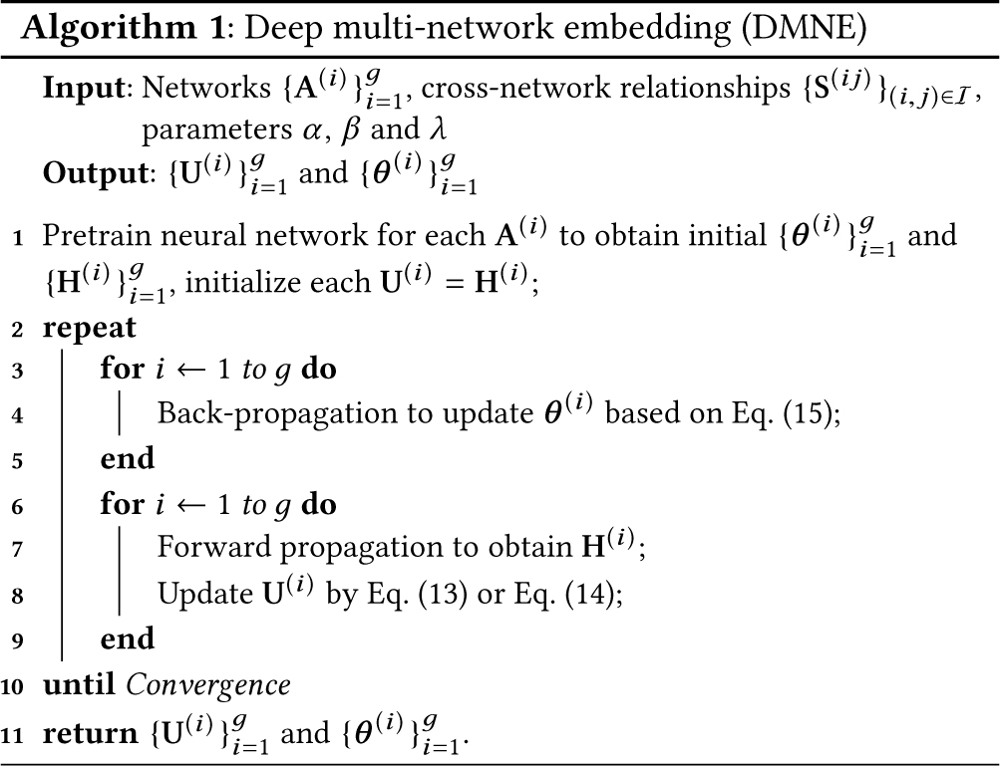

This is a HTML copy of https://doi.org/10.1145/3178876.3186113 originally published by ACM, redistributed under the terms of Creative Commons Attribution 4.0 (CC BY 4.0). The modifications from the original are solely to improve HTML accessability, compatibility, augmenting HTML metadata and avoiding ACM trademark. To reference this HTML version, use:
Permalink: https://w3id.org/oa/10.1145/3178876.3186113
DOI: https://doi.org/10.1145/3178876.3186113
WWW '18: Proceedings of The Web Conference 2018, Lyon, France, April 2018
Network embedding aims to learn a low-dimensional vector representation for each node in the social and information networks, with the constraint to preserve network structures. Most existing methods focus on single network embedding, ignoring the relationship between multiple networks. In many real-world applications, however, multiple networks may contain complementary information, which can lead to further refined node embeddings. Thus, in this paper, we propose a novel multi-network embedding method,
ACM Reference Format:
Jingchao Ni, Shiyu Chang, Xiao Liu, Wei Cheng, Haifeng Chen, Dongkuan Xu, and Xiang Zhang. 2018. Co-Regularized Deep Multi-Network Embedding. In WWW 2018: The 2018 Web Conference, April 23–27, 2018, Lyon, France. ACM, New York, NY, USA 11 Pages. https://doi.org/10.1145/3178876.3186113
Networks (or graphs) are pervasive in real-life applications. The rapid growth of information has generated a large volume of network data, such as social networks [22], document citation networks [19], and biological networks [13]. Network data are characterized by the complex dependencies between nodes. To analyze network data, one fundamental problem is to resolve the dependencies and learn low-dimensional vector representation for each node, such that the network structure is preserved in the learned vector space [29]. By doing so, network analysis such as node classification [21], node clustering [31] and link prediction [9] can then be readily performed in vector space by using the vast off-the-shelf machine learning algorithms. Usually, learning network representation is also known as network embedding [29]. The low-dimensional vectors to be learned are called node embeddings.
To tackle this problem, many methods have been proposed recently. For example, Laplacian Eigenmaps [1] solves leading eigenvectors of the Laplacian matrix of a graph as node embeddings, which can preserve the direct relationship between nodes in the graph. DeepWalk [29] uses random walks to extract local communities of each node in a network, which are preserved via a word embedding technique called skip-gram [23]. LINE [34] optimizes a KL-divergence function to learn embeddings, which can preserve both 1st- and 2nd-order proximities between nodes in a network. node2vec [9] further extends DeepWalk by adopting a biased random walk, so as to preserve both breadth first search (BFS) and depth first search (DFS) based neighborhoods of each node.
Despite the encouraging progress, the focus of most existing methods is single network embedding. In many emerging applications, however, related multiple networks are common to observe. For example, nowadays users are often involved in more than one online social networks. Thus multiple social networks from Facebook, Twitter, LinedIn, etc. are related one another by those common users. Fig. 1(a) illustrates this example, where the three social networks may be collected from different social platforms. Some users in them are common (e.g., U1, U2, U3) while others may be unique (e.g., U7, U8). In this scenario, there is a one-to-one correspondence between users from different networks, which represents the identity of users across different social networks, e.g., U1 represents the same user who appears in all networks.
In some applications, nodes in different networks may represent different entities. Fig. 1(b) shows a different type of multi-network. In this case, multiple networks may contain nodes of different domains, such as text documents, users and color images. Here, text-text links are formed by the hyper-links between different Web documents. Users are involved in a social network. Images co-occurring within the same Web page provide explicit linkages between them. Moreover, users may interact with texts and images by responding to them or clicking on them, which forms the cross-network relationships that interconnect multiple networks, as represented by the dotted lines in Fig. 1(b) . In this scenario, the mappings between nodes in different networks may form a many-to-many correspondence, instead of one-to-one, e.g., one user may interact with multiple Web documents, and vice versa.
Similar examples can also be observed in the information networks of many other fields. In bioinformatics, one important problem is to classify genetic diseases in a disease similarity network [8]. In this network, each node is a disease, and each edge depicts the phenotype similarity between two diseases [39]. To reflect the molecular foundation, we may explore the disease similarity network together with its underlying protein-protein interaction (PPI) network, where disease nodes and protein nodes are related one another via the known disease-protein associations [13]. The disease-protein associations form a many-to-many mapping. This is because multiple proteins can function synergistically to cause a single disease and a single protein can participate in the formation of multiple diseases.
In practice, because of measurement errors and data access limitations, a single network may contain dummy nodes and false links (i.e., noise), and missing nodes and missing links (i.e., incompleteness). Such defects can largely reduce the learned embedding quality. Whereas, the false or missing information in one network may be corrected in other related networks. Therefore, a promising approach to overcome the limitation of single network embedding is to exploit the compatible and complementary information in multiple networks to refine the embedding quality. Based on this intuition and the prevalence of multi-network data on the web, in this paper, we propose to investigate network embedding in the context of multiple networks.
Fig. 1(c) shows a general example of multi-network that covers the instances in both Fig. 1(a) and 1(b) . There are several characteristics that should be noticed. First, different networks may be about either the same or different sets of nodes, thus may have different sizes. Second, a node in one network may be associated with multiple nodes in another, making the cross-network relationship a many-to-many mapping, which is a generalization of one-to-one mapping. Third, each cross-network relationship may be associated with a weight, which is a generalization of a binary relationship. Fourth, some nodes in one network may not have corresponding node in another, making the cross-network relationship an incomplete, partial mapping.
In the previous social and biological applications, all these characteristics can be observed. For instance, in Fig. 1(b), a user-image relationship may be weighted by the frequency of the interaction. In the biological example, domain experts may specify weights on the disease-protein relationships using their prior knowledge, so as to mark the correlation levels of some disease-protein pairs.
To be practically useful, all the characteristics in Fig. 1(c) should be properly handled, so that refined embeddings can be learned from both instances of multi-network in Fig. 1(a) and 1(b) . So far, few methods have been developed to multi-network embedding problem. Until very recently, there is one method proposed on embedding multi-view network [30]. However, this method can only be applied to a special case of Fig. 1(c) when different networks are about the same set of nodes, with a strict one-to-one cross-network relationship. Hence, a more flexible method is in demand.
Another vital challenge in our problem is how to model the non-linearity of network data. As shown by [40], the underlying structures of many real-life information networks are highly non-linear, which cannot be fully captured by linear projection approaches such as SVD. To be effective, a preferable approach thus should offer the ability to catch the non-linearity of the data.
Motivated by the powerful representation learning ability of deep learning and its intrinsic non-linearity [15], we propose a novel algorithm, Deep Multi-Network Embedding (
The rest of the paper is organized as follows. Sec. 2 gives the problem definition. Sec. 3 introduces
Suppose we have g networks, each is represented by an adjacency matrix ${\bf G}^{(i)} \in \mathbb {R}_{+}^{n_{i} \times n_{i}}$ (1 ≤ i ≤ g), where ni denotes the number of nodes in the i-th network. In this paper, our analysis applies to any (un)directed and (un)weighted network. Thus G (i) can be either symmetric or asymmetric, and either continued or binary, with ${\bf G}_{xy}^{(i)}$ indicating the edge weight between nodes x and y in G (i). We denote the set of pairwise cross-network relationships by $\mathcal {I} = \lbrace (i,j)\rbrace$ . For example, $\mathcal {I} = \lbrace (1,2), (2,3)\rbrace$ contains two cross-network relationships: the relationships between networks G (1) and G (2), and the relationships between G (2) and G (3). Each pair (i, j) is coupled with a matrix ${\bf S}^{(ij)} \in \mathbb {R}_{+}^{n_{i} \times n_{j}}$ , with ${\bf S}_{xy}^{(ij)}$ measuring the weight between node x in G (i) and node y in G (j). For clarity, important notations are summarized in Table 1.
| Symbol | Meaning |
|---|---|
| g | The number of networks |
| ni | The number of nodes in the i-th network |
| di | The dimensionality of the i-th embedding space |
| Li | The number of neural net. layers for the i-th net. data |
| G (i) | The adjacency matrix of the i-th network |
| A (i) | The structural context matrix of the i-th network |
| S (ij) | The relationship matrix between nodes in G (i) and G (j) |
| ${\bf \tilde{S}}^{(ij)}$ | The row-normalized version of S (ij) |
| U (i) | The embedding matrix of the i-th network |
| $\lbrace {\bf W}_{l}^{(i)}\rbrace _{l=1}^{L_{i}}$ | The weight matrices for the i-th network data |
| $\lbrace {\bf b}_{l}^{(i)}\rbrace _{l=1}^{L_{i}}$ | The bias vectors for the i-th network data |
| θ (i) | The model parameters $\theta ^{(i)} = \lbrace {\bf W}_{l}^{(i)}, {\bf b}_{l}^{(i)}\rbrace _{l=1}^{L_{i}}$ |
| $\mathcal {I}$ | The set of cross-network relationships |
After embedding, each node x in network G (i) (1 ≤ i ≤ g) will obtain a low dimensional vector, i.e., the embedding vector. We use ${\bf h}_{x}^{(i)} \in \mathbb {R}^{1 \times d_{i}}$ to represent this vector, where di is the dimensionality of the embedding space of network G (i), which can be different for different i’s. In this work, our goal is to learn embedding vectors of all nodes in all networks, based on the structures of $\lbrace {\bf G}^{(i)}\rbrace _{i=1}^{g}$ and the regularizing constraints implicitly represented by the cross-network relationships in $\mathcal {I}$ .
Real-life networks are often so sparse that only using the very limited observed links is insufficient to capture reasonable relationships between nodes. In addition to direct neighbors, nodes in a network also have dependencies with indirect neighbors. Therefore, existing embedding methods usually employ certain sampling strategies to extract local community information as the structural context of each node [9, 29]. Among different strategies, random walk is the most widely used because of its intrinsic effectiveness in local clustering [32]. In this paper, we follow existing approaches [3] and use random walk with restart (RWR) to obtain structural context of each node.
Given a network G of n nodes, a starting node x, we introduce a k-step RWR vector ${\bf p}^{(k)} \in \mathbb {R}_{+}^{1 \times n}$ , with ${\bf p}_{y}^{(k)}$ indicates the probability of visiting node y after k step transitions from x. Let p (0) be the initial vector with ${\bf p}_{x}^{(0)}=1$ and all other entries being 0, then a RWR process is defined as [38]
To capture local information, we follow [3] and use several short-step RWR vectors to define the structural context vector a (${\bf a} \in \mathbb {R}^{1 \times n}$ ) for each node x.
After obtaining vectors a for all nodes, a structural context matrix A can be formed with each row as a for one node. An entry A xy indicates to what degree a node y will appear in the local community of node x. Using the same approach, we can obtain structural context matrices {A (1), ..., A (g)} for all networks {G (1), ..., G (g)}. In the following, $\lbrace {\bf A}^{(i)}\rbrace _{i=1}^{g}$ will be used as the input of our multi-network embedding method.
In this section, we introduce
For the i-th input network A (i), the neural network consists of Li + 1 layers for performing Li non-linear transformations. The first Li /2 hidden layers are encoders to learn a set of compact representations (i.e., dimension reduction) and the last Li /2 layers are decoders to progressively reconstruct the input. For ease of presentation, we first provide the following definitions. Let $({\bf h}_{x}^{(i)})_{0} = {\bf A}_{x*}^{(i)} \in \mathbb {R}^{1 \times n_{i}}$ (i.e., the x-th row of A (i)) be an input vector of node x to the first layer and
Since each row of the input A (i) in Eq. (4) encodes the local community of a node, minimizing the reconstruction error will enforce the learned embeddings to preserve the local neighborhood of each node. This is desirable because neighboring nodes in the network should also be close to each other in the embedding space.
To incorporate the cross-network relationship, the key idea is to add pairwise regularizers to the single-network embedding objective function. We develop two kinds of loss functions to regularize the cross-network embeddings. Both are designed to penalize the embedding inconsistency with the given cross-network relationships. The first loss function, ED loss, considers a simple case when the dimensionality of embeddings are the same in different networks. The second loss function, PD loss, is more flexible and has no such constraint.
3.2.1 Embedding Disagreement (ED) Loss Function. We start with a simple case when the dimensionality of embeddings are the same for different networks, i.e., d 1 = ... = dg = d. For simplicity, in the following, we use ${\bf h}_{x}^{(i)}$ to represent the embedding of a node x in network G (i), i.e., ${\bf h}_{x}^{(i)} = ({\bf h}_{x}^{(i)})_{L_{i}/2}$ . Intuitively, if a node x in network G (i) is mapped to a node y in network G (j), then the embeddings ${\bf h}_{x}^{(i)}$ and ${\bf h}_{y}^{(j)}$ should be similar. Now we generalize the relationship to many-to-many. We use $\mathcal {N}^{(i\rightarrow j)}(x)$ to denote the set of nodes in G (j) that are mapped to x in G (i) with positive weights. To penalize the inconsistency of cross-network embeddings, we propose the following loss function.
Let ${\bf \tilde{S}}^{(ij)}$ be row-normalized S (ij). That is
3.2.2 Proximity Disagreement (PD) Loss Function. Next, we develop a more flexible loss function. The intuition is based on the following shortcoming of ED loss. In Eq. (6), we observe that ${\bf h}_{x}^{(i\rightarrow j)}$ is a weighted mean of the embeddings in $\mathcal {N}^{(i\rightarrow j)}(x)$ . The ED loss compare ${\bf h}_{x}^{(i)}$ and ${\bf h}_{x}^{(i\rightarrow j)}$ directly to make them consistent. This is reasonable when the nodes in $\mathcal {N}^{(i\rightarrow j)}(x)$ are close to each other within network G (j). When nodes in $\mathcal {N}^{(i\rightarrow j)}(x)$ are far from each other (e.g., in different communities), their embeddings should be dissimilar to each other within G (j). However, directly making their mean consistent with ${\bf h}_{x}^{(i)}$ will enforce them to be similar to each other, which is counterintuitive.
To overcome this problem, the key is to avoid direct comparison between ${\bf h}_{x}^{(i)}$ and ${\bf h}_{x}^{(i\rightarrow j)}$ . Thus, for each pair of nodes x and z in network G (i), we first measure the proximity between ${\bf h}_{x}^{(i)}$ and ${\bf h}_{z}^{(i)}$ , and the proximity between ${\bf h}_{x}^{(i\rightarrow j)}$ and ${\bf h}_{z}^{(i\rightarrow j)}$ . Then, we measure the disagreement between these two proximity values. Taking Fig. 1(c) as an example. Note node x in network 1 is mapped to node 1 in network 2. Node z in network 1 is mapped to nodes {2, 3} in network 2. Intuitively, if the proximity between the embedding of node 1 and the mean embedding of nodes {2, 3} is small, the proximity between node x and node z should also be small. In this paper, we choose inner product to measure the proximity between two embeddings, e.g., ${\bf h}_{x}^{(i)}({\bf h}_{z}^{(i)})^{T}$ . Therefore, the cross-network proximity disagreement (PD) loss function is defined as
It is worth to note that in Eq. (9), without direct comparison of embeddings, PD loss allows embeddings in different networks G (i) to have the different dimensionality di , which is more flexible than ED loss. Moreover, both ED loss in Eq. (8) and PD loss in Eq. (9) can handle many-to-many, weighted and incomplete cross-network relationships as encoded in $\lbrace {\bf S}^{(ij)}\rbrace _{(i,j) \in \mathcal {I}}$ .
Next, we further develop our model to allow efficient optimization via stochastic gradient descent (SGD). In Eq. (8) and (9), all training samples, i.e., the rows of H (j), are coupled together through the multiplication ${\bf \tilde{S}}^{(ij)}{\bf H}^{(j)}$ , so SGD cannot be applied in sample-wise. As pointed out by [41], to speedup SGD via parallelization and to save memory, the model should allow samples to be divided by minibatch, which means an objective function should be decomposed into sums over training samples. Therefore, we relax Eq. (8) and (9) by introducing new variables $\lbrace {\bf U}^{(i)}\rbrace _{i=1}^{g}$ to replace $\lbrace {\bf H}^{(i)}\rbrace _{i=1}^{g}$ such that
Now, we can integrate individual network reconstruction in Eq. (4), the loss function in Eq. (10) and the regularizer Eq. (11) into a unified objective function
Note in Eq. (12), there is no multiplication ${\bf \tilde{S}}^{(ij)}{\bf H}^{(j)}$ , thus Eq. (12) can be decomposed into sums over rows of H (i), which means $\lbrace \theta ^{(i)}\rbrace _{i=1}^{g}$ can be solved efficiently using SGD via parallelization. To solve $\lbrace {\bf U}^{(i)}\rbrace _{i=1}^{g}$ , we also develop efficient iterative algorithm, which will be detailed in next section.
Theoretically, Eq. (11) is the negative log likelihood function of a sampling process ${\bf U}_{x*}^{(i)}\sim \mathcal {N}({\bf H}_{x*}^{(i)},{\bf I}_{d_{i}}/2)$ where ${\bf H}_{x*}^{(i)}$ represents the mean of the Gaussian distribution, ${\bf I}_{d_{i}}$ is a di -by-di identity matrix, and ${\bf U}_{x*}^{(i)}$ represents the sampled embedding of node x in network G (i). Therefore, in our method, we use U (i), instead of H (i), as the learned embeddings of nodes in G (i).
In this section, we develop an alternating minimization algorithm to optimize L in Eq. (12). That is, the objective function is alternately minimized w.r.t. one variable while fixing others, until a stationary point is achieved. Next, we provide the solution to $\lbrace {\bf U}^{(i)}\rbrace _{i=1}^{g}$ and $\lbrace \theta \rbrace _{i=1}^{g}$ , respectively.
Learning $\lbrace {\bf U}^{(i)}\rbrace _{i=1}^{g}$ . Given current $\lbrace \theta ^{(i)}\rbrace _{i=1}^{g}$ , we derive a multiplicative updating rule to solve $\lbrace {\bf U}^{(i)}\rbrace _{i=1}^{g}$ . The solutions are summarized in the following theorems, which are derived using the Auxiliary Function approach [17]. The detailed proofs of the theorems are omitted for brevity, which can be found in an online Supplementary Material2.
For ED loss, updating U (i) by Eq. (13) monotonically decreases the objective value in Eq. (12) until convergence.
For PD loss, updating U (i) by Eq. (14) monotonically decreases the objective value in Eq. (12) until convergence.
where ○, $\frac{[\cdot ]}{[\cdot ]}$ , $(\cdot)^{\frac{1}{2}}$ and $(\cdot)^{\frac{1}{4}}$ are entry-wise operators.
Learning $\lbrace {\bf W}_{l}^{(i)},{\bf b}_{l}^{(i)}\rbrace _{i=1}^{g}$ . Given current $\lbrace {\bf U}^{(i)}\rbrace _{i=1}^{g}$ , we can learn the weight and bias for each layer using the back-propagation (BP) algorithm [10]. Here, the key step is to calculate the gradients of L in Eq. (12) w.r.t. ${\bf W}_{l}^{(i)}$ and ${\bf b}_{l}^{(i)}$ , which are

Summary. Alg. 1 summarizes our algorithm, which alternates between the updating of $\lbrace {\bf U}^{(i)}\rbrace _{i=1}^{g}$ and $\lbrace \theta ^{(i)}\rbrace _{i=1}^{g}$ . According to Theorem 1 and 2, updating U (i) monotonically decreases the objective L in Eq. (12). Using SGD, updating $\lbrace \theta ^{(i)}\rbrace _{i=1}^{g}$ also decreases the objective value with proper learning rate and momentum [41]. Because Eq. (12) is bounded below by 0, the alternating algorithm will eventually converge.
Since the key difference between standard BP and our algorithm is the updating of U (i), we analyze the time complexity for Eq. (13) and (14). Let M be the maximal number of cross-network links in any S (ij), N be the maximal number of nodes in any network, D be the maximal dimensionality of embeddings di . We can verify that, using sparse matrix multiplication, the complexity of Eq. (13) and (14) are O((M + N)D) and O(MD + ND 2), respectively. In practice, D is a small number, M is often linear in N for sparse networks, thus the actual time complexity can be considered as linear O(N).
In this section, we conduct extensive experiments to evaluate our method. Specifically, we focus on two widely considered applications: multi-label classification and data visualization.
We use four publicly available social/information networks with class labels in our experiments, which are detailed in the following. The statistics of the datasets are summarized in Table 2.
| Dataset | # Networks | # Nodes | # Links | # CrossLinks | LabeledNet. | # LabeledNodes | # Classes |
|---|---|---|---|---|---|---|---|
| 6-NG | 5 | 4,500 | 16,447 | 66,756 | All | 4,500 | 6 |
| 9-NG | 5 | 6,750 | 24,778 | 100,585 | All | 6,750 | 9 |
| DP-NET | 2 | 13,583 | 51,918 | 2,107 | Disease | 675 | 18 |
| DBIS | 2 | 24,535 | 85,184 | 38,035 | Collaboration | 2,890 | 4 |
| CiteSeer-M10 | 3 | 15,533 | 56,548 | 11,828 | Collaboration | 3,284 | 10 |
20-Newsgroup dataset3 contains about 20,000 documents of 20 classes. Following [3, 37], we constructed two kinds of networks: 6-NG and 9-NG, which are formed by documents of 6 and 9 different classes, respectively. For brevity, we omit the names of selected classes, which are listed in [37]. For 6-NG, we generate 5 networks of different sizes. The first network contains randomly sampled 600 documents (100 from each class). For the remaining four networks, the numbers of sampled documents of each class are {125, 150, 175, 200}, forming networks of sizes {750, 900, 1050, 1200}. Using the same approach, 9-NG contains 5 networks of sizes {900, 1125, 1350, 1575, 1800}. Here, link weight is the cosine similarity between the tf-idf vectors of two documents. To reduce noises, we further construct a k-nn graph for each network with k = 5. The cross-network relationship is calculated by cosine similarity between documents from each pair of networks.
Disease-protein network (DP-NET) [13] consists of a disease network and a protein-protein interaction (PPI) network. The disease network has 5,080 nodes (diseases) and 19,729 links. Each link is weighted by the phenotype similarity between two diseases. The PPI network has 8,503 nodes (proteins) and 32,189 links. Each link has a binary weight, where 1 indicates a functional interaction between two proteins. Moreover, the disease network and the PPI network are interconnected by 2,107 disease-protein association relationships. Here, only 675 diseases are labeled, each in one of 18 classes (disease categories).
DBIS [35] is a social collaboration dataset, which contains a collaboration network of 12,002 nodes (authors) and 37,587 links. Each link is weighted by the number of co-authored papers. It also has a paper-paper similarity network of 12,533 nodes (papers). Each paper is first represented by a tf-idf vector based on its title, then pairwise cosine similarities are calculated using these vectors. To reduce noises, a k-nn graph is constructed for the paper network with k = 5, resulting in 47,597 weighted links. Additionally, collaboration network and paper network are interconnected by 38,035 author-paper publication relationships. Here, 2,890 authors are labeled, each in one of 4 classes (research areas) [14].
CiteSeer-M10 [18] is a subset of CiteSeerX data. It has a collaboration network of 3,284 nodes (authors) and 13,781 weighted links, and two paper networks: a citation network and a similarity network. The citation network has 2,035 nodes (papers) and 3,356 binary weighted links. Each link indicate a citation relationship. The similarity network is constructed in the same way as DBIS dataset, with 10,214 nodes (papers) and 39,411 weighted links. The collaboration network and paper citation network are interconnected by 2,634 author-paper relationships, and the number is 7,173 between collaboration network and paper similarity network. The two paper networks are interconnected by 2,021 one-to-one correspondence between papers. Here, each author is labeled in one of 10 classes (research areas).
In the first three datasets, the cross-network relationships are many-to-many. CiteSeer-M10 contains two paper networks with different link types, thus has a mixture of one-to-one and many-to-many cross-network relationships. This represents a mixture of the cases in Fig. 1(a) and 1(b), which cannot be handled by existing embedding methods.
Since no existing method can handle the co-regularized multi-network embedding problem, we compare the proposed
(1) Laplacian Eigenmaps (LE) [1]: it uses leading eigenvectors of the Laplacian matrix of a network as node embeddings.
(2) Spectral clustering (Spectral) [31]: it also uses eigenvectors, but differs from LE by using a normalized Laplacian matrix.
(3) DeepWalk [29]: it uses truncated random walk and skip-gram to generate node embeddings.
(4) LINE [34]: it minimizes a loss function to learn embeddings that preserve both 1st- and 2nd-order proximity between nodes.
(5) GraRep [2]: a SVD based embedding method that preserves high-order proximity between nodes.
(6) node2vec [9]: it extends DeepWalk by using a biased random walk to generate node embeddings.
(7) DNGR [3]: a stacked AutoEncoder based embedding method that uses the structural contexts in Eq. (2) as input, and trains the neural network in layer-wise.
(8) AutoEncoder (AE) [10]: it also uses the structural contexts in Eq. (2) as input but trains the neural network as a whole.
There is another AutoEncoder based method SDNE [40] which only preserves 1st- and 2nd-order proximity between nodes. We found by using RWR based structural contexts in Eq. (2), AE outperforms SDNE. Thus we omit SDNE for brevity. Note multi-view network embedding method [30] cannot be applied on these datasets since the cross-network relationships are many-to-many.
The parameters of the compared methods are set as follows. LE and Spectral do not have model parameters. For DeepWalk, LINE, GraRep, and node2vec, we set their parameters the same as the optimal settings in their papers. Specifically, DeepWalk uses window size 10, walk length 40, walks per vertex 80; LINE uses learning rate 0.025, # negative samples 5, # total samples 10 billion. We use its advanced version with both 1st- and 2nd-order of node proximity; GraRep uses # transition step 3; node2vec uses window size 10, walk length 80, walks per vertex 10, return p = 1, In-out q = 1. For DNGR, AE and
| 6NG, 9NG | B-200-100-200-B |
| DP-NET | B-500-100-500-B |
| DBIS | B-1000-500-100-500-1000-B |
| CiteSeer-M10 | author net., paper citation net.: B-500-100-500-B |
| paper similarity net.: B-1000-500-100-500-1000-B |
For 6-NG, 9-NG, DP-NET, DBIS, the dimensionality are set the same for different networks, due to the relatively small change in the sizes of networks. Here, B represents the number of nodes in each network. For example, B = 5, 080 for the disease network in DP-NET, and B = 8, 503 for the PPI network. For all methods, the dimensionality of embeddings are 100. For
First, we compare different methods through a classification task. On each dataset, the embeddings are learned from the full data. Then, the embeddings of labeled nodes are used as input to the SVM classifier in LIBLINEAR package [7]. When training the classifier, we randomly sample a portion of the labeled nodes as training data and the rest as testing data. The ratio of training data is varied from 10% to 90% for all datasets. The classification accuracy is evaluated using the widely used Macro-F1 and Micro-F1 scores [9, 29]. For each method, the prediction experiment is repeated 100 times and the averaged performance is reported.
Fig. 3 shows the results on all datasets. Considering the available labeled data, on 6-NG and 9-NG, the accuracy is averaged over all networks; on DP-NET, the disease network is evaluated; on DBIS and CiteSeer-M10, their collaboration networks are evaluated.
From the figure, we have the following observations. First,
To better understand the difference between the compared methods, we visualize their embeddings using the visualization tool t-SNE [20], which projects the learned embeddings of each method to a 2D space. Fig. 4 shows the results on the first network of 6-NG, which has 600 nodes. The colors (or shapes) represent 6 classes.
From the figure, we can observe the eigenvector based methods LE and Spectral cannot effectively identify different classes. Other baseline methods can detect the classes to varying extents. Both
To get more insights about
Varying cross-network relationships. First, we divide the pairwise cross-network relationships in 6-NG into 5 equal parts. Each time, we add one part (i.e., 20% relationships) into the data and apply
Parameter study. In our model in Eq. (12), there are two major parameters α and β. Fig. 5(b) and 5(c) show the classification accuracy on 6-NG by changing one parameter while fixing another as 1, with training data ratio at 10%. As can be seen, both loss functions are stable w.r.t. these parameters, and PD loss is better. For both loss functions, α and β are almost best as 1. Thus it is reasonable to set them at 1 in our experiments. Moreover, the non-zero choices of α and β demonstrate the importance of the regularization terms in our model L in Eq. (12).
| Dataset | | | ||||
| 3 layer | 5 layer | 7 layer | 3 layer | 5 layer | 7 layer | |
| 6-NG | 0.8091 | 0.8250 | 0.8276 | 0.8328 | 0.8428 | 0.8399 |
| 9-NG | 0.7309 | 0.7850 | 0.7939 | 0.7948 | 0.8224 | 0.8188 |
Shallow model vs deep model. To see the effectiveness of
In this section, we study the performance of the proposed
To our best knowledge, this is the first work to study deep multi-network embedding problem. Existing network embedding methods are mostly developed on a single network, such as eigenvector based methods [1, 36], skip-gram based methods [9, 29, 34], SVD based methods [2, 27] and AutoEncoder based methods [3, 40]. As discussed before, these single network based methods are subject to noises and incompleteness in individual information network.
Recently, several methods have been proposed to embed an attributed network, in which each node is associated with an attribute vector [11, 12, 28, 42, 43]. Their key idea is to integrate a dimension reduction component of attribute vectors into a network embedding framework to leverage the complementary information in node attributes and network structure. Despite their success in using node attributes to improve performance, these methods never consider multiple networks.
There are also some methods on embedding heterogeneous information network (HIN) [4, 6]. In these methods, an HIN is a special case of our multi-network in Fig. 1(c) in two aspects. First, they ignore the scenario when any two networks are about the same nodes but have different topological structures, i.e., the case in Fig. 1(a) . Second, they neglect edge weights, either within-network or cross-network (as shown by their mathematical formations). More specifically, the method in [4] was proposed on an HIN with node attributes. Its prerequisite is that each node must be associated an attribute vector, otherwise it cannot learn node embeddings from network structure only. However, in many applications, we only have link information, which necessitates methods on embedding network structures. The method in [6], on the other hand, requires users to specify meta-paths as its input, which is hard to choose in practice due to the absence of gold standard. This makes it hard to generalize to any applications. In [33], there is a text based HIN embedding method, which, however, is strictly designed for word-word, word-doc and word-label networks. It requires label information to be provided because it is a semi-supervised method. Then, how to generalize it to multiple networks of any shape for unsupervised learning is unknown. Clearly, all these methods have strong limitations, preventing them from being applied to our problem. More importantly, the goal of HIN based methods is to resolve the semantic meanings of different types of links, rather than using the complementary information in multiple networks to refine embedding quality. Therefore, there is a distinct difference between HIN based methods and multi-network based methods.
The multi-view network embedding method [30] may be the most relevant work, but, as discussed before in Sec. 1, it cannot be applied when the cross-network relationship is many-to-many, weighted and incomplete, as shown in Fig. 1(c) .
Our method is also inspired by traditional multi-view and multi-graph learning methods [5, 16, 24, 25, 26, 41], which aim to integrate multiple data sources in a certain task, such as instance clustering, to obtain performance gain. However, these methods are not designed for multi-network embedding, and none of them uses deep model to exploit the non-linear structures of the network data.
Integrating the rich social and information networks on the web is important to improve the robustness of representation learning methods. In this paper, we propose a flexible co-regularized deep multi-network embedding algorithm
This work was partially supported by the National Science Foundation grants IIS-1664629 and CAREER.
1In this work, we use sigmoid function $\sigma (x)=\frac{1}{1+exp(-x)}$
2https://nijingchao.github.io/dmnesup/dmnesup.pdf
3http://qwone.com/%7Ejason/20Newsgroups/
This paper is published under the Creative Commons Attribution 4.0 International (CC-BY 4.0) license. Authors reserve their rights to disseminate the work on their personal and corporate Web sites with the appropriate attribution.
WWW' 18, April 23–27, 2018, Lyon, France
© 2018; IW3C2 (International World Wide Web Conference Committee), published under Creative Commons CC-BY 4.0 License. ACM ISBN 978-1-4503-5639-8/18/04.
DOI: https://doi.org/10.1145/3178876.3186113